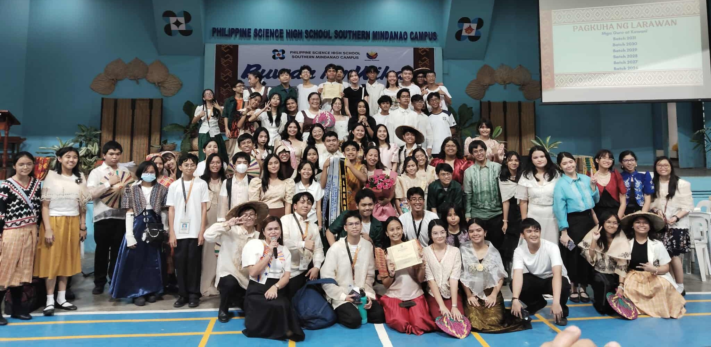

About Us
Edu-cacy is an advocacy group founded in August 2025 with the mission of increasing the quality of education and eliminating education poverty. Established by a group of students from the Philippine Science High School – Southern Mindanao Campus (PSHS-SMC) during their third year of high school, the organization was born out of a shared realization that education, while a fundamental right, remains inaccessible or of poor quality for many. Led by its main founder, Victor A. Quilao III, Edu-cacy envisions a future where every learner, regardless of background, has access to the tools, resources, and opportunities needed to thrive academically and beyond.
The idea for Edu-cacy began when its founders, while conducting research for a school assignment, uncovered alarming gaps and inequalities in the education system. What started as an academic task quickly transformed into a call to action, as they recognized the urgency of addressing these issues beyond the classroom. Motivated by their findings, they organized themselves into a formal group dedicated to advocacy, outreach, and solution-driven initiatives. Today, Edu-cacy stands as a youth-led movement committed to bridging educational divides, empowering communities, and inspiring others to join the fight for a more equitable and high-quality education system.
About the Founder
Victor A. Quilao III, born on February 17, 2011, is a Grade 9 scholar of the Philippine Science High School - Southern Mindanao Campus (PSHS-SMC) and founder of the organization. His passion for knowledge and learning drives both his academic pursuits and his advocacy work. Known for his curiosity and dedication, Victor pairs his intellectual interests with a deep commitment to teaching, guiding, and helping others. His belief that education is a powerful tool for change has shaped his vision as the main founder of Edu-cacy, where he channels his skills and compassion into initiatives aimed at improving education quality and addressing educational inequality.
Contact Us:
Location: PSHS SMC - Davao-Bukidnon Rd, Tugbok, Davao City, Philippines
Email: victoriii.quilao@smc.pshs.edu.ph
Facebook: Thirdy Antonio Quilao